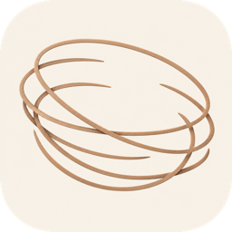

Highlight your understanding.
Nested is a calm reader for a folder of Markdown notes on your Mac. Ask about a phrase and the answer lands under the paragraph, or refine the page and undo any change. New pages nest under the page they came from.
macOS 12 or newer, Apple Silicon and Intel. Not notarized with Apple yet, so on first open Control-click Nested and choose Open. More on installing.
Read, highlight, ask.
Open a page and read it in a quiet column. When a phrase stops you, select it. An ask box opens under the paragraph.
At night the transcript plays again. In slow-wave sleep the same cells fire in the same order, only faster, packed into bursts a few hundred milliseconds long. This replay is thought to move fragile memories into the cortex, where they can survive without the hippocampus.
Press Return for a Quick Answer. It is short, and it streams in right under the paragraph, so you stay on the page.
At night the transcript plays again. In slow-wave sleep the same cells fire in the same order, only faster, packed into bursts a few hundred milliseconds long. This replay is thought to move fragile memories into the cortex, where they can survive without the hippocampus.
The claim rests on lesion studies. Memories that are old enough survive damage to the hippocampus, while recent ones do not, which implies that consolidation has already moved the trace to cortex before that point.
When the answer closes, the phrase keeps a dotted underlineHovering the phrase shows its answer again, like this.. Hover it, or tab to it, and the answer shows again.
Press ⌘↵ for a New Page. Nested writes a page about the selection and opens it beside the one you are reading. Press ⌘⇧↵ for a Deep Dive, a longer page written in the background and marked unread for later.
New pages nest under the page they came from.
The tree in the sidebar shows the shape of what you have understood so far. A blue dot marks a page you have not read yet. A green ring marks a page with changes to review. Every page is a plain .md file in the folder you opened.
- Why the brain replays the day
- Replay into cortex
- Does replay run the other way (unread)
- Slow oscillations
- Sharp-wave ripples
- Same order (changes to review)
- Replay into cortex
The tree in the sidebar.
- why-the-brain-replays-the-day.md
- replay-into-cortex.md
- does-replay-run-the-other-way.md
- slow-oscillations.md
- sharp-wave-ripples.md
- same-order.md
The same session in the Finder.
Open a folder and every .md inside is the corpus. Open a single .md and the pages you create are saved next to it. Nothing else is needed to read your notes anywhere else. Drag a folder or a file into the window to open it. Nested can be the default app for Markdown files.
Refine rewrites a selection, a page, or the whole session. Each change is tinted, so you can undo any one of them, and every refine keeps the previous text as a version. ⌘R switches the ask box between Ask and Refine, and with nothing selected it refines the page.
The session map (⌘K) shows the pages as a graph. Home lists your recent sessions.
Shortcuts
- ↵ Quick Answer
- ⌘↵ New Page
- ⌘⇧↵ Deep Dive
- ⌘R Refine the page, or switch the ask box to Refine
- ⌘K Map
- ⌘F Find
- ⌘B Toggle tree
- ⌘O Open
Bring your own AI.
Settings › AI takes any of these. API keys live in the macOS Keychain.
- OpenAI
- Anthropic
- Ollama
- Any OpenAI-compatible server
Or use the ChatGPT plan or Claude plan you already pay for, through the official command-line tool signed in on your Mac. With Ollama nothing leaves the machine.
The model can read the folder while it answers. It reads only, never outside the folder, and the page says what it is reading. Context toggles decide what leaves the machine with each request.
What leaves your Mac.
There is no account. No content, file paths, prompts or keys are sent anywhere except to the AI provider you chose. The one exception is anonymous usage counts, and only in builds compiled with an analytics key.

Install
Nested runs on macOS 12 or newer. One build covers Apple Silicon and Intel. Open the .dmg and drag Nested to Applications.
First open
The build is not notarized with Apple yet, so the first open needs one extra step. Control-click Nested and choose Open. Or open System Settings, go to Privacy & Security, and choose Open Anyway.
Updates
Nested checks for a newer version a few seconds after it opens and every few hours. A quiet card at the foot of the window offers Update and relaunch.